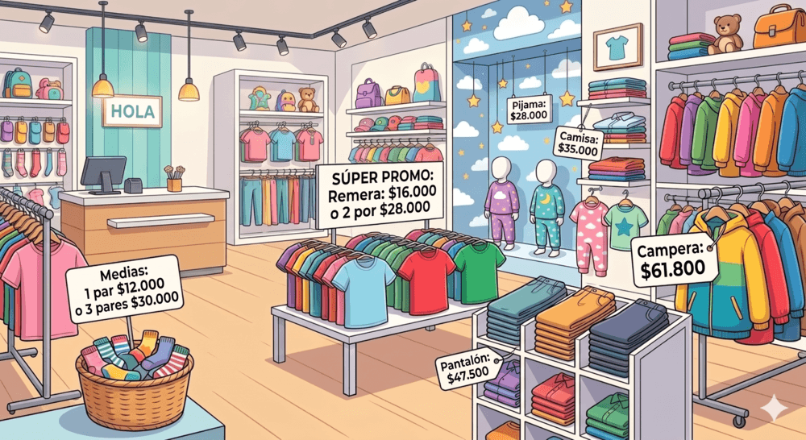

Presionar ↗️ para editar la actividad
Marcar la casilla y luego 📋 para copiar la actividad o 🖨️ para imprimir o exportar a .PDF
| Ficha 1: Varias situaciones |
1. Los hermanos de Cecilia Cecilia tiene 5 hermanos. Su mamá, que tiene 36 años, le regaló $200 para comprarse caramelos. Su tío, que tiene 40 años, le regaló $500 más.
2. El cumpleaños de Mariela. Hoy es el cumpleaños de Mariela. Ella cumple 12 años. Para su fiesta, la mamá compró 50 empanadas de carne y 50 de jamón y queso. Fueron todos los amigos de la escuela. Queremos saber si alcanzaron las empanadas para todos, pero falta un dato. Marcá con una cruz cuál es el dato que falta:
3. Viaje de Egresados Los alumnos de 5º grado se van de campamento. El viaje dura 3 días y van a un lugar que queda a 150 km de la escuela. Viajan 28 alumnos en total y cada uno pagó $12.000 por el transporte. El micro tiene patente que termina en 45.
4. Compras en el Kiosco Alejandro va al kiosco y compra 4 sobres de figuritas a $100 cada uno y una caja de chicles a $900. Leé las preguntas y marcá con una cruz solo las que se pueden responder con la información que tenés (no hace falta resolverlas):
Ahora que ya sabés qué pregunta se puede resolver, agregá los datos que faltan para contestar las otras. 5. El armario de la escuela La seño Olivia hizo un recuento de los materiales de su armario. Este es su registro: 24 reglas, 12 gomas, 3 cajas de 12 crayones cada una, 5 cajas de 6 lápices cada una, 6 papeles afiches blancos y 4 papeles afiches amarillos.
6. Las baldosas del patio Queremos cubrir una pared rectangular con cerámicos cuadrados. Sabemos cuántos cerámicos entran a lo largo (base) y cuántos entran a lo alto (altura).
|
| FIcha 2: Kiosco |
1. ¿Qué información tenemos? (Filtrado y validación)Observá la imagen del kiosco y marcá con una cruz (X) las preguntas que SÍ se pueden responder con la información que ves. Escribí la respuesta al lado.
2. Inventores de problemasMirando los productos y precios del kiosco, inventá y escribí:
3. Calculando la meriendaTomás quiere comprar un alfajor y un jugo en cajita para su merienda.
4. ¿Qué compró Sofía?Sofía fue al kiosco con $500. Gastó todo su dinero y no le dieron vuelto. ¿Qué productos pudo haber comprado? Escribí dos opciones diferentes.
5. Después del kioscoLa vendedora del kiosco, al terminar su día, fue a la librería a comprar tizas para escribir el pizarrón de las ofertas. Llevaba $2.000 y la caja de tizas le costó $1.200. ¿Con cuánto dinero volvió a su casa? |
| Ficha 3: Supermercado |
1. Detectives de preciosMirá con atención la góndola del supermercado. Indicá con una cruz (X) qué preguntas se pueden responder con la imagen y escribí la respuesta. Si no se puede, dejá el espacio vacío.
2. Pensar la pregunta (Metacognición)Imaginá que sos el profesor. Escribí:
3. La compra del mesMartín lleva la siguiente lista de compras en su changuito:
4. El misterio del ticketLucía tiene $2.100 que le regaló su abuela para colaborar con la compra. Quiere gastarlo todo ¿Qué combinación de productos distintos puede hacer para que la suma sea exactamente $2.100?
5. Saliendo del súperAl salir del supermercado, Martín y Lucía tomaron un taxi para volver a casa. El viaje les costó $3.500. Si Martín tenía $5.000, ¿cuánto dinero le sobró? |
| Ficha 4: Librería escolar |
1. Mirar antes de comprarObservá los estantes de la librería y respondé. Si la información no está, poné una raya (-).
2. Preguntas curiosasEscribí dos preguntas sobre la imagen:
3. Preparando la mochila.La mamá de Julieta quiere aprovechar la oferta de los cuadernos.
4. Combinaciones escolaresEl abuelo le dio a Pedro $5.000 para gastar en la librería. Pedro quiere comprar cosas, pero no quiere un cuaderno. Escribí 3 combinaciones diferentes de productos que Pedro puede comprar gastando exactamente los $5.000.
5. El vuelto justoLucas fue a otra librería a comprar una mochila que costaba $18.500. Abrió su billetera y vio que tenía un billete de $20.000.
|
| Ficha 5: Panadería |
1. Lectura expertaObservá los carteles de la panadería. Marcá con una cruz las preguntas que se pueden responder y escribí la respuesta calculada.
2. El cliente curiosoMirando los precios de la torta y las facturas, inventá un problema matemático para tus compañeros que incluya la palabra "vuelto" o "sobra". ....................................................................................................................................................................... ....................................................................................................................................................................... 3. La compra inteligenteLa mamá de Sofía necesita comprar 13 facturas para un cumpleaños.
4. Armando el pedidoEl abuelo pasó por la panadería con un billete de $10.000 y quiere llevar algo para tomar mate con sus 4 nietos. Escribí dos opciones diferentes de lo que podría comprar gastando menos de $10.000 pero llevando al menos dos tipos de productos distintos.
5. Pago a proveedores.Al cerrar la panadería, el dueño tuvo que pagarle al proveedor de harina. La bolsa de harina le costó $12.500. El panadero abrió la caja y pagó con un billete de $20.000.
|
| Ficha 6: En la tienda |
 1. ¿Verdadero o Falso? Determina si las siguientes afirmaciones son Verdaderas (V) o Falsas (F), basándote únicamente en lo que puedes ver en la imagen de la tienda. Si es falsa, escribe por qué.
2. El Inventar y AnalizarImagina que sos un diseñador de actividades matemáticas. Escribí:
3. Combinando el Conjunto y Calculando el VueltoPilar quiere comprar un pantalón y una camisa. Ella tiene en su billetera dos billetes de $20.000, cinco billetes de $1.000 y dos billetes de $100.
4. El Canasto de MediasAnaliza la promoción de las medias: "1 par $12.000 o 3 pares $30.000".
5. La Gran Compra de la AbuelaLa abuela de Julieta compró para sus nietos:
Ella pagó con billetes de $20.000. ¿Cuántos billetes de $20.000 usó como mínimo para pagar y cuánto vuelto recibió? Escribe los cálculos paso a paso. 6. Inventores Detectives IIEscribí una pregunta sobre la imagen que se responda con los ojos sin hacer ninguna operación matemática (sobre color, posición o cantidad) y otra imposible.
7. Análisis de la Promo de RemerasObserva la promo de remeras: "Remera: $16.000 o 2 por $28.000".
|